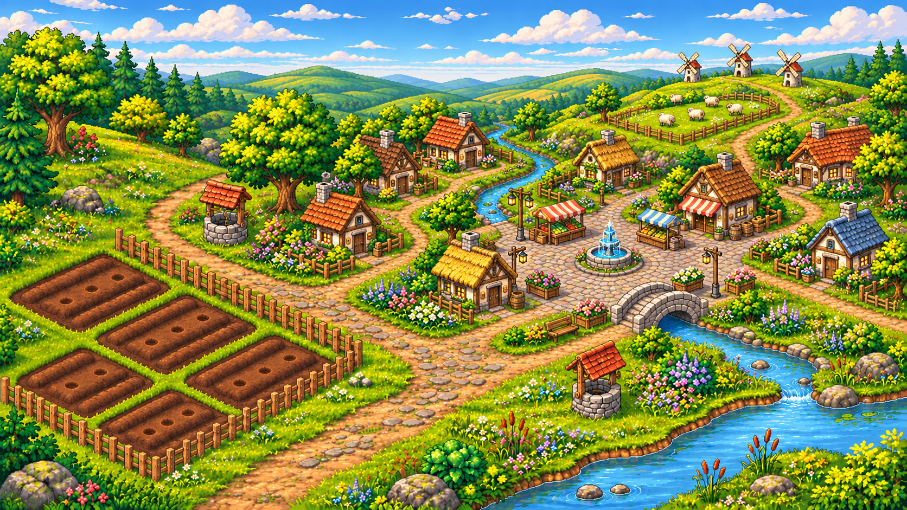

NÔNG TRẠI OAKSHIRE
ARTHUR
👨🏻1
ARTHUR ♥ 12/12
TL12/12
🪙 420 XUKN: 0/300
NẮNG 28°CGIÓ NHẸ 12KM/HGIỜ LÀNG: 06:00
N
◉
S
◉
S
◆ NHIỆM VỤ 01
ĐANG LÀM
GIEO 1 CÂY CẢI BẮP
Bấm vào luống trống, chọn hạt trong kho rồi gieo.
TIẾN ĐỘ0/1 BƯỚC
+100 XU | +25 KN
NÔNG TRẠI OAKSHIRE15 luống trồng · 4 cư dân
15LUỐNG
NÔNG TRẠI● ỔN ĐỊNH
⚙ CỐI XAY GIÓ:CHƯA XÂY
Xây cối xay để làm bột từ lúa mì và ngô.●